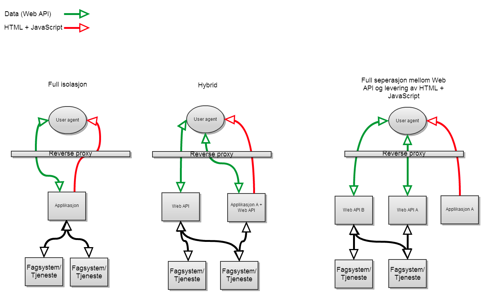

Webarktitektur part 1
Mål (Øyvind)
- Forståelse for utfordringen med mangel på konvensjoner på pather
- Enighet om fremgangsmåte
- På sikt etablere en tydelig konvensjon som fremmer gjenbruk og lave vedlikeholdskonstnader.
Endringer i arkitektur (Øyvind)
Status i dag (Ken)
- Noen tradisjonelle JSF-applikasjoner, som er isolerte
- Noen JavaScript-applikasjoner som bruker flere tjenester
- Skattefinn som første 360view applikasjon?
- Ingen konvensjoner
Utviklervennlighet (Ken)
- Indireksjonslag på alle tjenester
- Mange applikasjoner kommer langt med å bruke eksisterende tjenester
Forslag
/api - I praksis JSON over HTTP
/web - Tradisjonelle webapper med en backend
/app - Tynne JavaScript-applikasjoner som kan deployes som rene filer
Eksempler
/api/part/identifisering/identifiser?TIN=23913820913 <- Returner data om personen
/web/jsfapplikasjon <- En hvilken som helst applikasjon med backend
/app/skattefinn <- Tynn javascriptapplikasjon. Kun statiske filer
Driftbarhet (Øyvind)
- Forutsigbarhet for BigIP og WebSEAL-driftere
- Enhetlig deploymentmodell for alle miljøer
- Vi krever en RP
Vedlikehold (Øyvind)
- Prosjekter varer ikke evig
- Komponenter blir tatt over av linjen. Fordel å gjøre ting likt.
- Det er krysskoblinger i dag, så dette er ikke noe nytt.
- Fokus på API har mange fordeler
- Tydelig hva som kan gjenbrukes
- Lettere å teste maskinelt
- Lettere å plassere ansvar
Sikkerhet (Øyvind)
- Nå-situasjon:
- Utviklingsmiljø som er fjernt fra produksjonsmiljø
- CORS
- Avslått sikkerhet i utvikling
- Kan ikke force HTTP-only eller secure på sesjonscookies
- Vanskeligere å deploye web application firewall
- Ønsker:
- Et utviklingsmiljø som er likt prod
- Mulighet til å sette headere i en reverse proxy
- Kontrollere data som går fra ytre til sikkert nivå (WAF)
Hva kreves? (Øyvind)
- Tjenesteoversikt
- Noen må være koordinator (Webarktitekt)
Eksempel (Ken)
- Vise flere miljø?
- Vise to applikasjoner i samme miljø
- Skattefinn
- Partsøk
Diskusjon